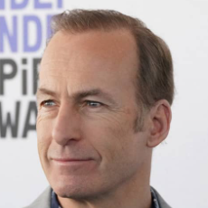
Nascimento: 22 de outubro de 1962
Nacionalidade:Norte Americano
Altura:1,75m
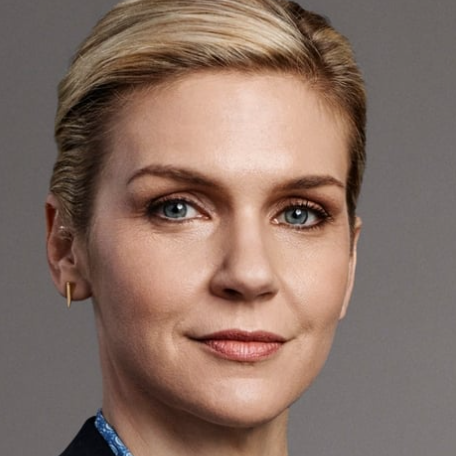
Nascimento: 12 de maio de 1972
Nacionalidade: Norte Americana
Altura:1,64m
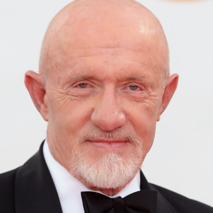
Nascimento: 31 de janeiro de 1947
Nacionalidade: Norte Americano
Altura:1,74m
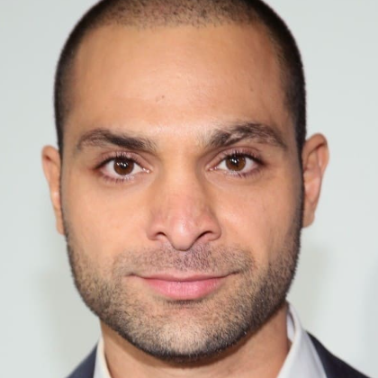
Nascimento: 13 de julho de 1981
Nacionalidade: Norte Americano
Altura:1,75m
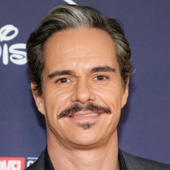
Nascimento: 13 de fevereiro de 1975
Nacionalidade: Norte Americano
Altura:1,83m
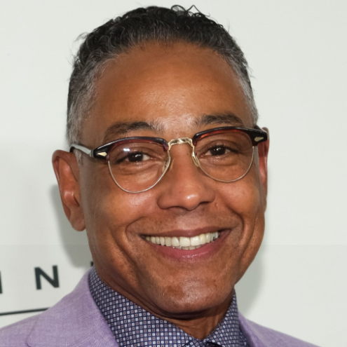
Nascimento: 26 de abril de 1958
Nacionalidade: Dinamarquês
Altura:1,73m
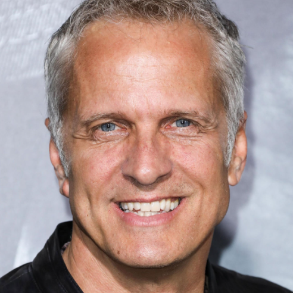
Nascimento: 7 de dezembro de 1964
Nacionalidade: Norte Americano
Altura:1,84m
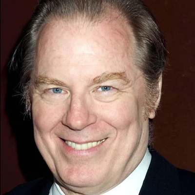
Nascimento: 17 de outubro de 1947
Nacionalidade: Norte Americano
Altura:1,83m
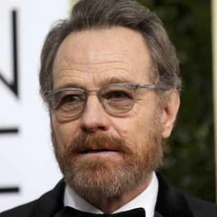
Nascimento: 7 de março de 1956
Nacionalidade: Norte Americano
Altura:1,79m
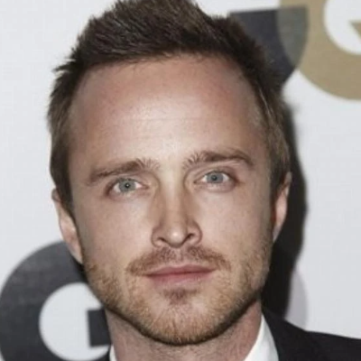
Nascimento: 27 de agosto de 1979
Nacionalidade: Norte Americano
Altura:1,73m
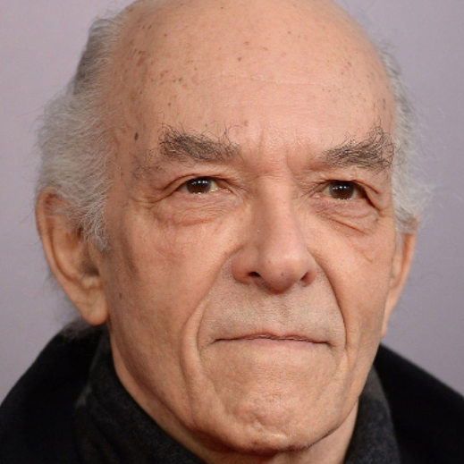
Nascimento: 26 de novembro de 1939
Nacionalidade: Norte Americano
Altura:1,80m